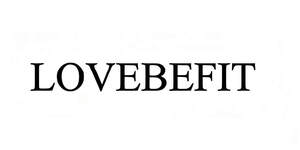

Trade Mark Journal No.2026/003 16 January 2026
UK00004317163 30 December 2025 (9,16,21)

- Class 9
- Reflective articles for wear, for the prevention of accidents; Protection devices for personal use against accidents; Clothing for protection against accidents, irradiation and fire; Protective helmets; Diving suits; Gloves for protection against accidents; Ear plugs for divers; Life buoys; Shoes for protection against accidents, irradiation and fire; Reflective safety vests; Dust masks incorporating air purification; Insulating gloves for protection against accidents; Fire extinguishers; Measures; Cables, electric; Spectacles; Selfie sticks [hand-held monopods]; Pedometers; Scales; Shields for protecting the faces of workmen.
- Class 16
- Paper; Advertisement boards of paper or cardboard; Lithographic works of art; Gummed tape [stationery]; Stamps [seals]; Note books; Square rulers for drawing; Teaching materials [except apparatus]; Books; Drawing boards; Ink; Filter paper; Modelling materials; Bookbinding material; Pens [office requisites]; Face towels of paper; Toilet paper; Numbers [type]; Garbage bags of paper or of plastics; Document files [stationery].
- Class 21
- Brushes; Basins [bowls]; Glasses [receptacles]; Cosmetic utensils; Crystal [glassware]; Toothpicks; Toothbrushes; Dusting cloths [rags]; Gloves for household purposes; Brooms; Mops; Dustpans; Animal grooming gloves; Insulating flasks; Insect traps; China ornaments; Liqueur sets; Tea services [tableware]; Watering cans; Ceramics for household purposes.
Adore Group (Hong Kong) Limited
Representative: YONGWU QIU